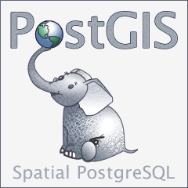

PostGIS開発グループ
Abstract
PostGISは、オブジェクトRDBであるPostgreSQLの拡張で、GIS (地理情報システム)オブジェクトを格納することができます。PostGISは、GiSTベースのR木空間インデクスをサポートし、GISオブジェクトの解析および処理を行う機能を持ちます。


本マニュアルは、3.4.0版のマニュアルです。
 この作品はクリエイティブ・コモンズ 表示 - 継承 3.0 非移植 ライセンスの下に提供されています。好きなようにこの材料を使うことができますが、PostGIS Project のクレジット提示を求めます。また可能な限りhttp://postgis.netへのリンクを求めます。
この作品はクリエイティブ・コモンズ 表示 - 継承 3.0 非移植 ライセンスの下に提供されています。好きなようにこの材料を使うことができますが、PostGIS Project のクレジット提示を求めます。また可能な限りhttp://postgis.netへのリンクを求めます。
Table of Contents
- 1. 導入
- 2. PostGISインストール
- 3. PostGIS管理
- 4. データ管理
- 5. 空間クエリ
- 6. 性能向上に関する技法
- 7. PostGISリファレンス
- 7.1. PostGIS Geometry/Geography/Box データ型
- 7.2. テーブル管理関数
- 7.3. ジオメトリ コンストラクタ
- 7.4. ジオメトリアクセサ
- 7.5. ジオメトリエディタ
- 7.6. ジオメトリ検証
- 7.7. 空間参照系関数
- 7.8. ジオメトリ入力
- 7.9. ジオメトリ出力
- 7.10. 演算子
- 7.11. 空間関係関数
- 7.12. 計測関数
- 7.13. 重ね合わせ関数
- 7.14. ジオメトリ処理関数
- 7.15. カバレッジ
- 7.16. アフィン変換
- 7.17. クラスタリング関数
- 7.18. バウンディングボックス関数
- 7.19. 線型参照
- 7.20. トラジェクトリ関数
- 7.21. SFCGAL関数
- 7.22. ロングトランザクション機能
- 7.23. バージョン関数
- 7.24. Grand Unified Custom変数 (GUC)
- 7.25. トラブルシューティング関数
- 8. トポロジ
- 9. ラスタデータの管理、クエリ、アプリケーション
- 10. ラスタ リファレンス
- 10.1. ラスタサポートデータ型
- 10.2. ラスタ管理
- 10.3. ラスタコンストラクタ
- 10.4. ラスタアクセサ
- 10.5. ラスタバンドアクセサ
- 10.6. ラスタピクセルアクセサとセッター
- 10.7. ラスタエディタ
- 10.8. ラスタバンドエディタ
- 10.9. ラスタバンド統計情報と解析
- 10.10. ラスタ入力
- 10.11. 出力
- 10.12. ラスタ処理: 地図代数
- 10.13. 組み込み地図代数コールバック関数
- 10.14. ラスタ処理: DEM (標高)
- 10.15. ラスタ処理: ラスタからジオメトリ
- 10.16. ラスタ演算子
- 10.17. ラスタとラスタバンドの空間関係関数
- 10.18. ラスタに関する技法
- 11. PostGIS追加機能
- 12. PostGIS関数索引
- 12.1. PostGIS集約関数
- 12.2. PostGISウィンドウ関数
- 12.3. PostGIS SQL-MM準拠関数
- 12.4. PostGISジオグラフィ対応関数
- 12.5. PostGISラスタ機能関数
- 12.6. PostGISジオメトリ/ジオグラフィ/ラスタのダンプ関数
- 12.7. PostGISボックス関数
- 12.8. 3次元対応PostGIS関数
- 12.9. PostGIS曲線ジオメトリ対応関数
- 12.10. PostGIS多面体サーフェス対応関数
- 12.11. PostGIS関数対応マトリクス
- 12.12. 新規作成/機能強化/変更されたPostGIS関数
- 12.12.1. PostGIS 3.4 で新規作成/機能強化された関数
- 12.12.2. PostGIS 3.3 で新規作成/機能強化された関数
- 12.12.3. PostGIS 3.2 で新規作成/機能強化された関数
- 12.12.4. PostGIS 3.1 で新規作成/機能強化された関数
- 12.12.5. PostGIS 3.0 で新規作成/機能強化された関数
- 12.12.6. PostGIS 2.5 で新規作成/機能強化された関数
- 12.12.7. PostGIS 2.4 で新規作成/機能強化された関数
- 12.12.8. PostGIS 2.3 で新規作成/機能強化された関数
- 12.12.9. PostGIS 2.2 で新規作成/機能強化された関数
- 12.12.10. PostGIS 2.1 で新規作成/機能強化された関数
- 12.12.11. PostGIS 2.0 で新規作成/機能強化された関数
- 12.12.12. PostGIS 1.5 で新規作成/機能強化された関数
- 12.12.13. PostGIS 1.4 で新規作成/機能強化された関数
- 12.12.14. PostGIS 1.3 で新規作成/機能強化された関数
- 13. 問題を報告する
- A. 付録